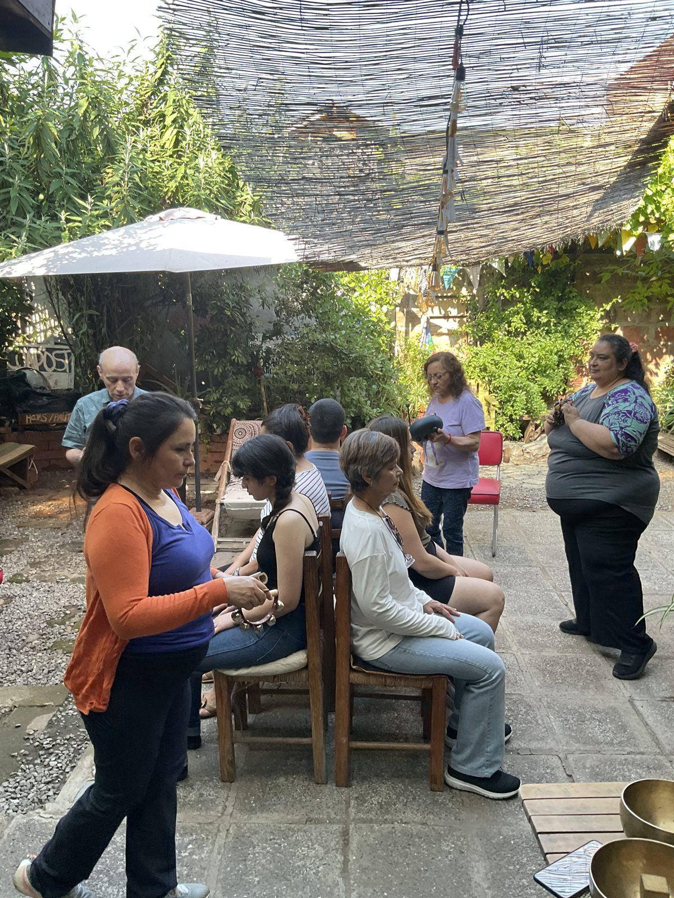
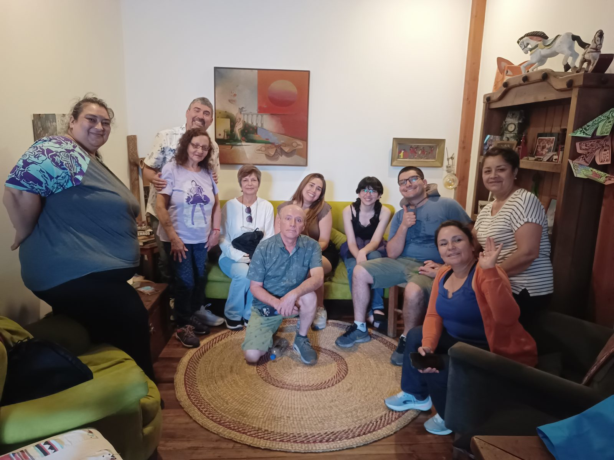

← Todas las sesiones
Sesión 4 · Sábado 14 de noviembre
Darle espacio a lo que siento
La ternura, el step out, el baño sonoro en grupo y el arte de acompañar las emociones en un lugar seguro.
La ternura, el step out, el baño sonoro en grupo y el arte de acompañar las emociones en un lugar seguro.
Esta vez nos juntamos en Madrid 1874, a dos cuadras de nuestra sede, y el grupo llegó igual con todo. 💚 Partimos, como siempre, jugando: para reírnos, soltar el cuerpo y volver a encontrarnos.
Luego volvimos al Alba Emoting. Practicamos el patrón del amor ternura (la respiración lenta como olas en la orilla, la sonrisa suave, el cuerpo que se acerca para cuidar) y aprendimos por fin el step out, la forma de soltar una emoción y volver al centro. También repasamos juntos las otras emociones básicas y para qué nos sirve cada una.
Después vino la exploración de instrumentos: cuencos, campanas, palos de lluvia, tambores… cada uno fue descubriendo sonidos y eligiendo los suyos. Con ellos nos regalamos un baño sonoro en grupo: un grupo se lo daba al otro, con la consigna de contactar con la ternura, el cuidado, el amor y el bienestar.
Fue un momento muy profundo. Muchas personas expresaron sus emociones y se abrieron a compartir lo que estaban sintiendo. Aparecieron recuerdos de la infancia, personas que nos han mirado con ternura, la naturaleza, lugares donde nos hemos sentido seguros…
Queremos agradecer y celebrar la apertura de cada uno. Atreverse a sentir y a poner afuera lo que llevamos dentro no es fácil, y ustedes lo hicieron. Eso es justamente uno de los objetivos de este taller: que sea nuestro lugar seguro. Porque para lograr el bienestar necesitamos saber expresar nuestras emociones y permitírnoslo. ¡Bravo, grupo! 💚

Mientras unos cerraban los ojos y se dejaban llevar, los otros tocaban los instrumentos a su alrededor con suavidad y cariño. Después cambiamos de lugar. Dar y recibir cuidado: las dos caras de la ternura.
Cuando alguien se emociona o llora frente a nosotros, muchas veces nos incomodamos y salimos al rescate: "pobrecita, no llores", "ya, ya, no es para tanto", "mira el lado bueno". Lo hacemos con cariño, pero sin querer le estamos diciendo a la otra persona que su emoción no tiene lugar.
En el taller acordamos algo distinto: cuando alguien expresa una emoción, lo acompañamos en presencia. No intentamos aplacarla ni apurarla. Simplemente estamos ahí.
No hace falta apagar la emoción del otro. Basta con estar.
¿Por qué es tan importante? Porque eso es justamente lo que necesitamos aprender: expresar las emociones en un espacio seguro. Muchas veces no tenemos esos espacios en la casa, en el trabajo o con la familia. Por eso el taller puede ser ese lugar: aprovechémoslo. Lo que se dice y se siente en el grupo, se cuida en el grupo.
Desde el Alba Emoting entendemos que las emociones son energía en movimiento. Ninguna es "buena" o "mala": todas cumplen una función adaptativa, nos ayudan a vivir, a protegernos y a relacionarnos.
Cuidar y dejarnos cuidar. Crea vínculo, cercanía y protección.
Celebrar, compartir y conectar con otros. Nos da vitalidad.
Soltar lo que perdimos, mirar hacia dentro y pedir apoyo.
Poner límites, defender lo que nos importa y darnos fuerza para actuar.
Alertarnos del peligro y protegernos. Nos ayuda a prevenir.
Disfrutar, gozar de los sentidos y de la vida, y entregarnos al placer.
Cuando una emoción aparece y no le damos el espacio que necesita, esa energía no desaparece: se queda guardada. Y muchas veces el cuerpo la termina expresando a su manera, es decir, somatizamos:
Hay momentos en que no podemos: estamos en el trabajo, cuidando a un hijo, a un nieto o a una persona enferma, o co-regulando a otros (sosteniendo su calma). Está bien guardar la emoción por un rato. Lo importante es no olvidarla:
Durante el día o la semana, regálate un rato para ti, aunque sean 10 minutos.
Un lugar tranquilo donde te sientas en calma: tu pieza, la ducha, una plaza, el auto estacionado, un rincón con plantas…
Respira, recuerda lo que pasó y pregúntate: ¿qué siento?, ¿dónde lo siento en el cuerpo? Déjala estar, sin juzgarla.
Si necesitas llorar, llora. Si necesitas moverte, muévete. Si quieres, escribe, dibuja o toca un instrumento. Al terminar, haz un step out y vuelve al centro.
¿Quieres repasar las demás emociones? Las encuentras con su respiración, postura y rostro en la sesión 3.
Alba Emoting es un método desarrollado por la Dra. Susana Bloch. Para profundizar: Al alba de las emociones (Susana Bloch).
Algunos momentos del cuarto encuentro. Toca una foto para verla en grande.
🔔 El baño sonoro en grupo

Dos prácticas guiadas, dos alternativas para contactar con tus emociones en un lugar seguro. No se trata de cambiar lo que sientes, sino de respirar, acoger y sostener la emoción con amabilidad, para que pueda moverse y cumplir su función.
Desde la respiración, te invita a darte cuenta de las emociones que surgen y a nombrarlas con amabilidad y sin juicio: "me siento ansioso… irritada… feliz… triste…". Ideal para cuando sientes "algo" pero no sabes bien qué es.
Imagina tu conciencia como un lago de aguas calmas que se agita cuando llegan las emociones. Aprenderás a observarlas desde la orilla, sin hundirte en ellas, hasta que el agua vuelva a aquietarse. Ideal para cuando una emoción te desborda.
Cómo practicar:
Audios de la Escuela Española de Desarrollo Transpersonal (escuelatranspersonal.com), del programa "20 enfoques de atención hacia la Esencia" (Círculo de las emociones, enfoques 1 y 2), utilizados con su autorización.
Elige un lugar (real o imaginario) donde te sientas a salvo y en calma. Puede ser uno de los que aparecieron en el baño sonoro. Dibújalo o descríbelo en tu libreta, con sus colores, sonidos y olores. Vuelve a él cuando lo necesites.
Si esta semana guardas una emoción porque no era el momento, agéndate una cita con ella: busca tu lugar seguro, escucha uno de los audios y dale espacio.
Tres veces al día, detente y pregúntate: ¿qué siento ahora?, ¿dónde lo siento en el cuerpo? Ponle nombre con amabilidad, sin juzgarlo. Anótalo.
Recuerda a una persona (o un animal, o un lugar de la naturaleza) que te haga sentir ternura. Respira como en el patrón de la ternura y deja que ese recuerdo te abrace. Si quieres, escríbele una carta, aunque no la envíes.
Si alguien cercano te comparte algo difícil, practica escuchar sin aconsejar ni apurar: "Estoy aquí", "Tómate tu tiempo". Observa qué te pasa a ti cuando lo haces.
Cuando sientas una emoción intensa, después de darle espacio, haz tres respiraciones del step out para volver a tu centro.
Del cuarto encuentro (la ternura, el step out, el baño sonoro, los recuerdos y las emociones que aparecieron…), ¿qué se quedó contigo? Compártelo aquí: una palabra, una frase o lo que necesites decir.
Muy pronto podrás dejar aquí tu reflexión. Mientras tanto, compártela en el grupo de WhatsApp 💚
Las reflexiones se publican de forma anónima. Antes de aparecer aquí pueden tardar unos minutos. Las de la semana anterior están en la sesión 3.